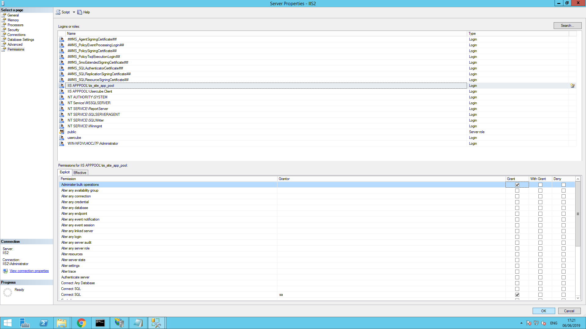

Install the Server
NOTE: If you are a SaaS client this topic does not apply. You can skip directly to end user authentication. See the Set up End-User Authentication topic for additional information.
Identity Manager Server can be installed on the same workstation as the database or on a separate workstation. If Identity Manager is installed on a separate workstation, it requires the SQL PowerShell components to function properly.
Please make sure that the server requirements are met before going further. See the Server topic for additional information.
Server Working Directory
The server executable is beeing been extracted to the working directory as Usercube-Server.exe and Usercube-Server.dll and will enable a user or IIS to run the Identity Manager Server. See the
Create a Working Directory
topic for additional information.
Set up the License Key
The license key provided by Identity Manager must be set up in the appsetting.json > License attribute. See the Application Settings topic for additional information.
Create an IIS Website
It is recommended to run the Identity Manager Server as an IIS website.
To install the Identity Manager Server as a Windows service, please jump to Install the Server as a Windows Service. See the Install the Server topic for additional information.
Adding the Identity Manager Server as an IIS website can be achieved with the Internet Information Services (IIS) Manager which can be launched with the INETMGR.MSC command. You need to have an IIS 10.0 or greater.
An IIS website must be created using the Microsoft guide and the following parameters:
-
Site name:
Usercube<Organization>is the recommended naming convention -
Physical path —
/<working directory>/Runtime -
Type —
http -
IP address —
All unassigned -
Port & Hostname — To access the Identity Manager Server and the UI. Use the hostname and port that has been reserved for Identity Manager.
During installation, the following information guides some of your choices:
-
The Identity Manager Server uses an in-process hosting model
-
Identity Manager Server's
web.configcan be found in theRuntimefolder -
The Identity Manager Server uses .NET
After creation, the following settings are recommended:
-
Application Pool >
Usercube<Organization>> Advanced Settings > General > Start Mode set toAlwaysRunning; -
Application Pool >
Usercube<Organization>> Advanced Settings > Process Model > Idle Time-out (minutes) set to0and Load User Profile set toTrue; -
Application Pool >
Usercube<Organization>> Recycling > Regular time intervals set to0.Recycling the application pool creates a discontinuation in the connection between server and agent, which can disrupt some of Identity Manager's features such as the job scheduler. IIS already recycles the application pool at each setting change, thus Netwrix Identity Manager (formerly Usercube) recommends not using periodic recycling.
The following is mandatory:
- Application Pool >
Usercube<Organization>> Advanced Settings > General > .NET CLR Version >No Managed Code

An SSL Certificate should also be set to the IIS Server to perform HTTPS communication with end-users.
Hosting Bundle
You need to install the dotnet hosting bundle (version 8.0 or higher) to be able to run dotnet application.
Select a Server Identity
The Identity Manager Server, through the IIS Website, should be assigned a service account with the relevant permissions.
Create the service account
This section requires using an Active Directory account with sufficient privileges to create service accounts on the domain.
To create a service account you need to perform the following steps:
Step 1 – Log on to a Windows server in the target domain environment. You should use an account with the necessary permissions to create new domain accounts.
NOTE: The target domain is the domain where SQL Server is installed.
Step 2 – Access the Active Directory User and Computers tool with the command dsa.mc.
Step 3 – Select the target domain and Click on Users. From the users list, right-click to select New > User.
Step 4 – Choose a mnemonic First Name for the Identity Manager Server, as for example UsercubeContosoServer, and click Next.
Remember, the down-level log on name in the format DOMAIN/userName,.as for example CONTOSO/UsercubeContosoServer.
Step 5 – Set a password and remember it for later, check the boxes User cannot change password and Password never expires.
This newly created service account is a domain account and will be used as an IIS identity.
NOTE: You can go further and use Managed Service Account to avoid dealing with the service account password update yourself and let Windows worry about it. This feature requires installing Identity Manager on Windows Server 2016 or later, and using an Active Directory with a forest level set to Windows Server 2016 or later.
Set an IIS identity
The following implies that a custom service account has already been created for the Identity Manager Server.
To set an IIS identity you need to perform the following steps:
Step 1 – Open the IIS Manager (INETMGR.MSC) and then the Application Pools node underneath the machine node.
Step 2 – Select the Usercube/<Organization> application pool and right-click and select Advanced Settings.
Step 3 – In the Process Model section, on the Identity list item, click on the three dots to open the Application Pool Identity dialog.
Step 4 – Select the Custom Account radio button and click on Set and enter the previously created Service Account credentials:
- User name in the format
DOMAIN/userNamethat you have previously written down - Password, previously remembered
Step 5 – Click OK. You're all set.
The Identity Manager Server IIS site will now use this identity to access the database and the working directory.
Set-up Permissions
The Server permissions include the database and working directory.
Set- up the database permissions
The service account used by the Server to access the database needs the following database-level roles in SQL Server:
-
Public -
Dbowner
And the Administer bulk operations server-level role.
This guide will show you how to perform these operations using SQL Server Management Studio:
Step 1 – Open SQL Server Management Studio (SSMS) and log in to access the server on which runs the Identity Manager Database with an account member of the sysadmin or securityadmin server-level role.

Step 2 – Expand the Security and Login nodes, and look for the Identity Manager service account in the list.
If you cannot find the service account click on the Login node, right-click and select New > Login.
Step 3 – On the General page, enter the service account login name in the down-level logon format, such as CONTOSO/UsercubeContosoServer.
If you're not sure about the correct spelling of your service account or domain, you can search for it using the search window. From the Login node, right-click and select New login > Login name > Search.
Step 4 – Choose eitherWindows authentication if you chose to connect the server to the database with a Windows service account (Integrated Security=SSPI in the connection string) or a SQL Server authentication for a SQL Server account (if you set up the connection string with a login/password). In the SQL case, fill in the same password in the form as in the connection string. You should now see the newly created login in the Login list.
Step 5 – From the Login node, right-click the newly created login and select Properties then go to the Server Roles page on the left and make sure public is checked.
Step 6 – Go to User Mappingand make sure Usercube/<Organization/> is checked (top panel), as well as db_owner and public (bottom panel).

Step 7 – Right-click the Server root node and select Properties, and in the Permissions tab, select the service account or group name.
Step 8 – Grant the Administer bulk operations permission. and confirm with OK.
Identity Manager Server now has the required permissions to access the database.
Set the working directory permissions
The Identity Manager Server needs specific permissions on the working directory to run, read synchronization output, and write provisioning orders. See the Server topic for additional information.
Up to four folders have to be considered:
- The working directory
- The runtime directory, usually
C:/Usercube<Organization>/Runtime - The data collection directory, usually
C:/Usercube<Organization>/Temp - The provisioning orders directory, usually
C:/Usercube<Organization>/Temp(same as for the data collection directory).
See the Create a Working Directory and Application Settings topics for additional information.
The following steps can be performed for each of the relevant directories.
First, let's check what permissions the service account already has.
To do so go to the working directory parent folder, right-click the working directory, select Properties and then select Security.
From there, you have two choices.
The Identity Manager Server service account that was chosen previously:
-
Already has or belongs to a group that already has the needed permissions. There is nothing more to do
-
Is missing one of the needed permissions and you need to perform the steps underlined below:
Step 1 – Click on Edit and then on Add.

Step 2 – In the Enter the object names to select textbox, enter the service account name in the down-level log on format, such as
CONTOSO/UsercubeContosoServer, then click OK.Step 3 – Select the newly added user name in the Group or user names panel at the top of the window.
Step 4 – Check the Allow column for the relevant permissions. Check the Deny column for the others, and then OK.
The working directory permissions are all set.
The same steps have to be performed on the runtime, the data collection and the provisioning orders directories. See the Create a Working Directory and Application Settings topics for additional information.
Encryption and Authentication Key Pairs
The Identity Manager Server requires an RSA-2048 encryption key pair to perform various encryption operations, such as source, configuration, or log file encryptions. Identity Manager's Identity Server also needs an RSA-2048 authentication key pair for end-user authentication purposes.
These certificates don't need to be integrated into the target organization's Public Key Infrastructure (PKI) and don't require an expiration date. They're only relevant to specific Identity Manager temporary data and can be changed at any time.
Each RSA key pair, as in an X.509 public key certificate and a private key, can be stored one of two ways:
-
As a PKCS #12 archive (also called Personal Information Exchange file or
.pfxfile) stored in the Server's host file system. The file contains both the public key certificate and the private key. -
As a certificate from a Windows' certificate store identified by SubjectDistinguishedName or by Thumbprint. The Windows certificate also contains both the public key certificate and the private key. This is the recommended method.
The key pairs can be generated with tools such as OpenSSL or Microsoft's New-SelfSignedCertificate, and pvk2pfx tool.
Here's an example showing how to generate a PKCS #12 archive (UsercubeContoso.pfx) bundling a public key certificate (usercubecontoso.cert) and an RSA-2048 private key (usercubecontoso.key) with OpenSSL, with a 50-year expiration date:
Code attributes enclosed with <> need to be replaced with a custom value before entering the script in the command line.
1.
openssl req -x509 -newkey rsa:2048 -keyout usercubecontoso.key -out usercubecontoso.cert -days 18250
2.
openssl pkcs12 -export -out UsercubeContoso.pfx -inkey usercubecontoso.key -in usercubecontoso.cert
Public key certificates can also be bought from trusted certificate providers and bundled with a private key into a PKCS #12 archive using step 2 in the frame above.
Generate and use an encryption key pair
This is the key pair used to perform various encryption operations, such as source, configuration, or log file encryptions.
Step 1 – Generate a key pair using the OpenSSL method.
Step 2 – Store the key pair as a .pfx file or use the Windows certificate store (recommended).
Step 3 – Link the generated certificate to Identity Manager.
Generate and use an identity server key pair
This is the key pair used by the Identity Server for end-user authentication purposes.
Step 1 – Generate a key pair using the OpenSSL method.
Step 2 – Store the key pair as a .pfx file or use the Windows certificate store (recommended).
Step 3 – Link the generated certificate to Identity Manager.
Certificate as a plain file
The following parameters are used to link the file to Identity Manager in the IdentityServer section.
PKCS #12 archive can be password protected, hence the X509KeyFilePassword attribute.
Storing a .pfx file password in plain text in a production environment is strongly discouraged. The password should always be encrypted using the Usercube-Protect-CertificatePassword tool. See the
Usercube-Protect-CertificatePassword
topic for additional information.
Code attributes enclosed with <> need to be replaced with a custom value before entering the script in the command line.
appsettings.json
{
...
"IdentityServer": {
"X509KeyFilePath": "./UsercubeContoso.pfx",
"X509KeyFilePassword": "eff@%fmel/"
}
...
}Certificate in the certificate store
The certificate can be stored in the certificate store instead of the file system. This is the recommended method.
Code attributes enclosed with <> need to be replaced with a custom value before entering the script in the command line.
appsettings.json
{
...
"IdentityServer": {
"X509SubjectDistinguishedName":"UsercubeContoso",
"X509StoreLocation": "LocalMachine",
"X509StoreName": "AuthRoot"
}
...
}Connect the Server to the Database
Now that the Identity Manager Server has been provided with a service account with the right permissions, let's finalize the setup.
The connection between the Server and the Database requires choosing an authentication method: Windows Authentication or SQL Server authentication. See the Connection to the Database and Usercube-Protect-CertificatePassword topics for additional information. Windows authentication will require the IIS identity to be set to the custom Windows service account used to log in to the Identity Manager's Windows Server session. SQL authentication will work with both the built-in app pool identity and a custom service account. This authentication method will write the login and password directly in the connection string.
Runtime/appsettings.json is a technical configuration file that enables you to set up the connection between the Server and the Database through the ConnectionString attribute. See the Network Configuration topic for additional information.
The connection string is set up in the Runtime/appsettings.json configuration file which can be edited with any text editor, such as Notepad++.
If the SQL Server is hosted on Azure, you should use the AzureCredentials setting before going further.
In theRuntime/appsettings.json file, find or write the ConnectionString attributes following the examples shown below:
The first example sets a connection string using the Windows authentication (Integrated Security=SSPI) to connect, on a local SQL Server system (source=.), to the UsercubeContoso database. See the
The service account used by the Server to access the Database is either:
- A Windows account if the connection string was set up using
Integrated Security=SSPI. - A SQL Server account if the connection string was set up with a login/password.
Code attributes enclosed with <> need to be replaced with a custom value before entering the script in the command line.
appsettings.json
{
...
"ConnectionString": "data source=.;Database=UsercubeContoso;Integrated Security=SSPI;Min Pool Size=10;encrypt=false;"
...
}
The second example sets a connection string using the SQL Server authentication. CONTOSO/UsercubeContosoServer has been set as the Identity Manager Server IIS website identity.
Code attributes enclosed with <> need to be replaced with a custom value before entering the script in the command line.
appsettings.json
{
...
"ConnectionString": "data source=.;Database=Usercube;User Id=CONTOSO/UsercubeContosoServer;Password=myPassword;Min Pool Size=10;encrypt=false;"
...
}
RECOMMENDED: SQL Server authentication stores plain text credentials in the configuration file. This is strongly discouraged. To avoid storing plain text credentials, you should always strive to use Windows authentication or encrypt sensitive setting values such as the connection string.
SSL Certificate
The Identity ManagerServer requires the use of an SSL Certificate trusted by all the target end-users' browsers. The standard setup is to use a certificate signed by the target organization's PKI root Certificate Authority and import the certificate into the end-user's Windows Store.
This can be achieved using the Microsoft Management Console (MMC). See the View certificates with the MMC for additional information.
DNS
Your organization's DNS needs to be updated according to the requirements indicated in Hostname and DNS. See the Server topic for additional information.
Test Your Installation
In order to test your installation you must:
Step 1 – Make sure the IIS site is running.
Step 2 – Go to the following URL with a browser: <hostname>:<port>/hc with the hostname and port set up in Create an IIS website. See the Install the Server topic for additional information.
Step 3 – The Identity Manager Server is trying to access the Database. If it succeeds, the message Healthy should be displayed in the browser.
Configure the Starting Mode in IIS (optional)
This step is important if the scheduler is enabled. IIS starts the Identity Manager Server only if an incoming http request is made on the server and the scheduler is not launched until the Identity Manager Server is started. Because of that, you need to carefully set up the starting mode of IIS to force the starting of the Identity Manager Server.
The Identity Manager Server warm up is done using the <applicationInitialization> element in the web.config file, the configuration is described in the Microsoft documentation.
You need to:
- Enable the Application Initialization feature
- Modify the applicationHost.config file to set the startMode of the application pool as AlwaysRunning. You also need to set the preloadEnabled of your application set to true. It is advised to backup the applicationHost.config file when doing this step to prevent mistakes.
- Double check that the following section is set in your web.config file, in the section system.webServer:
Code attributes enclosed with <> need to be replaced with a custom value before entering the script in the command line.
<applicationInitialization doAppInitAfterRestart="true"> <add initializationPage="/"></applicationInitialization>
Once done, you need to check that the configured jobs are launched via the Identity Manager's scheduler without having to manually issue a request on the Identity Manager Server.
If this is not correctly configured, any restart of your IIS or application pool could prevent jobs from being launched.
Set up End-User Authentication
The next step consists in setting up one or more authentication methods for end-users. You may choose one or several external authentication providers among the following:
Everything you need to know about setting up authentication is provided in the Technical Configuration Guide. See the End-User Authentication topic for additional information.
What's Next?
Install the Agent is the next step of the process. See the Install the Agents topic for additional information.